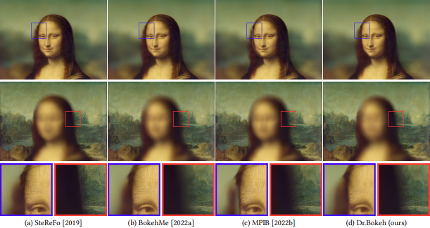
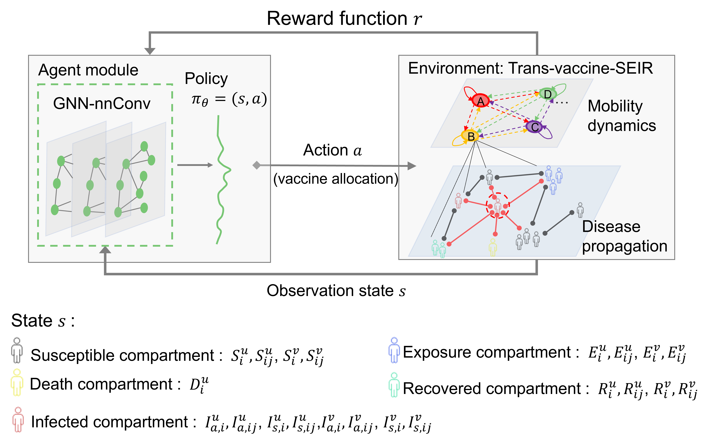

Lu Ling I am Lu Ling, a PhD candidate in the IDEADs Lab at Purdue University, advised by Prof. Aniket Bera.
Email / Google Scholar / LinkedIn / Twitter |
News
|
Selected Publications |

|
I-Scene: 3D Instance Models are Implicit Generalizable Spatial LearnersLu Ling, Yunhao Ge, Yichen Sheng, Aniket Bera CVPR 2026 Feed-forward interactive 3D scene generation / world models. Strong generalizability and high fidelity for unseen layout and various spatial relations. > proj > paper > code |

|
Scenethesis: A Language and Vision Agentic Framework for 3D Scene GenerationLu Ling, Chen-Hsuan Lin, Tsung-Yi Lin, Yifan Ding, Yu Zeng, Yichen Sheng, Yunhao Ge, Ming-Yu Liu, Aniket Bera, Zhaoshuo Li ICLR 2026 An Agentic Framework for Text-to-3D Scene Generation. The generated scenes are diverse, interactive, realistic, and physically plausible for virtual content creation, editing, simulation, and embodied AI. > proj > paper > code |

|
DL3DV-10K: A Large-Scale Scene Dataset for Deep Learning-based 3D VisionLu Ling, Yichen Sheng, Zhi Tu, Wentian Zhao, Cheng Xin, Kun Wan, Lantao Yu, Qianyu Guo, Zixun Yu, Yawen Lu, Xuanmao Li, Xingpeng Sun, Rohan Ashok, Aniruddha Mukherjee, Hao Kang, Xiangrui Kong, Gang Hua, Tianyi Zhang, Bedrich Benes, Aniket Bera CVPR 2024 > proj > paper > code |
|  |
Dr.Bokeh: DiffeRentiable Occlusion-aware Bokeh RenderingYichen Sheng, Zixun, Yu, Lu Ling, Zhiwen Cao, Cecilia Zhang, Xin Lu, Ke Xian, Haiting Lin, Bedrich Benes CVPR 2024 Lens blur effects in image compositing > proj > video |

|
PixHt-Lab: Pixel Height Based Light Effect Generation for Image CompositingYichen Sheng, Jianming Zhang, Julien Philip, Yannick Hold-Geoffroy, Xin Sun, HE Zhang, Lu Ling, Bedrich Benes CVPR 2023 (highlight) Light effects synthesis in image compositing > paper > code |
|  |
Cooperating Graph Neural Networks with Deep Reinforcement Learning for Vaccine PrioritizationLu Ling, Washim Uddin Mondal, Satish V. Ukkusuri IEEE Journal of Biomedical and Health Informatics (2024) Reinforcement learning, graph neural network, deep learning, disease diffusion > paper |
Academic ServicesReviewer
|
Projects |

|
Performance of Right-Turn Lane Designs at IntersectionsProject 2020-12-04 paper / |
|
Cool sites from Jon Barron's website. Thanks for Leonid Keselman's Jekyll template |